Nye venskaber begynder med Heeij.
Logo & mærke
Ordet er logoet: Heeij sat i Bricolage Grotesque ExtraBold (800) med −0,02 em sporing og koral-prikker over i og j. De to prikker er den visuelle signatur — to mennesker, der mødes — og er altid koral, uanset sammenhæng. Navnet skrives Heeij uden punktum i løbende tekst.

Regler
- Kun de to farvekombinationer ovenfor. Prikkerne skifter aldrig farve.
- Friareal: mindst højden af det lille "e" til alle sider.
- På alle kvadratiske/små flader — favicon, app-ikon, avatar — bruges flisen: hele wordmarket på navy, hvor teksten fylder ~80 % af bredden. Der findes intet separat mikromærke.
- Wordmarket må ikke sættes i anden skrift, strækkes, konturocheres eller få effekter.
- Det tidligere "H."-monogram er udgået og må ikke bruges.
Farver
Navy i stedet for sort. Papir i stedet for hvidt. Koral er bevidst knap — ét koral-øjeblik pr. flade.
Notekort-pasteller
Bruges kun som baggrund på notekortene — aldrig til knapper eller UI.
Typografi
Tre skrifter, tre roller. Alle er Google Fonts under OFL-licens — gratis til kommerciel brug.
Grafiske motiver
Notekort ("opslag")
- Pastel-rektangler med radius ~13–16 px, roteret ±4–6°.
- Blå nåleprik centreret på overkanten; blød navy skygge (rgba(22,55,99,.4)).
- To linjer: "hvornår" i Caveat (blå) og "hvad" i Bricolage (navy).
- Indholdet er konkrete, danske aktiviteter — de står for virkelige møder.
Koral-prikkerne
Prikkerne over i og j i wordmarket — brandets accent og signatur: to prikker, to mennesker, der mødes. Altid koral, altid en del af wordmarket (aldrig et løst mærke).
Papir-baggrunden
Varm, rolig, analog — "anti-feed". Intet rent hvidt, intet rent sort, nogen steder.